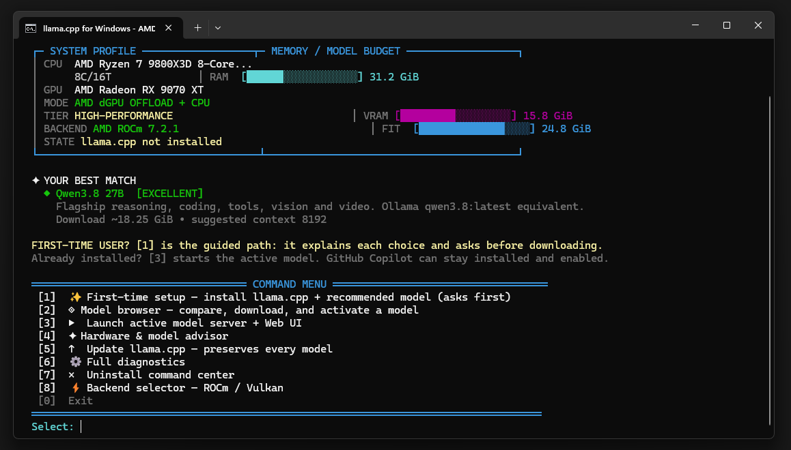
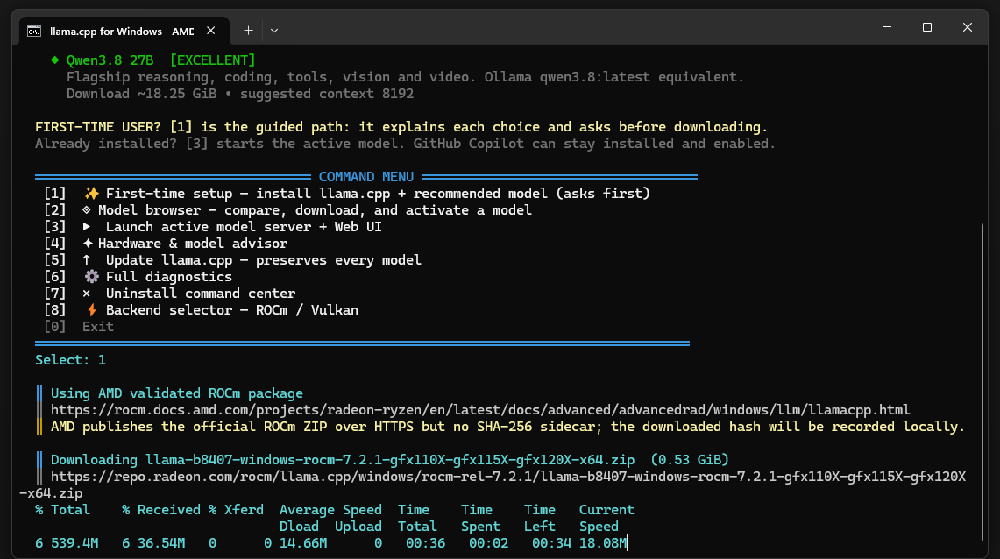
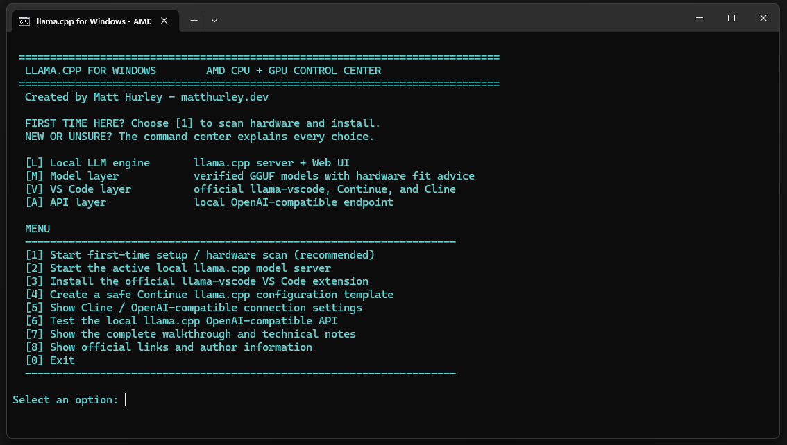

llama.cpp AMD Windows Command Center
A colorful, hardware-aware Windows front end for installing, configuring, running, and connecting llama.cpp to VS Code.
AMD RadeonROCm + VulkanGGUF modelsLocal APIVS CodeStart here
- Double-click
Start-LlamaCpp.cmdand choose [1] Start first-time setup / hardware scan. - Accept the recommended backend and model when prompted.
- Return to the menu and choose [2] to start the local server.
- Choose [6] to test the API, then use [3] or [4] for VS Code setup.
If you are unsure, start with option [1]. If you only want to read first, choose [7] for the complete walkthrough. Choose [9] to view the latest run log.
Quick start
- Install or update the AMD Adrenalin driver.
- Download and extract the release ZIP, or clone this repository.
- Double-click
Start-LlamaCpp.cmd. - Choose [1] Start first-time setup / hardware scan.
- Review the detected CPU, Radeon GPU, VRAM, RAM, backend, and model recommendation.
- Install the selected backend and model, return to the menu, and choose [2] to start the local server.
- Choose [6] to test the API, then use [3] or [4] for VS Code setup.
See the actual setup
These screenshots show the intended first-time experience: the hardware-aware dashboard, the verified model download, and the local server launch screen.



One menu, four layers
L — Local engine
llama-server.exe, Web UI, and a localhost-only API.
M — Model
GGUF discovery, hardware-fit advice, revision resolution, and SHA-256 verification.
V — VS Code
Copilot Chat custom endpoints, official llama-vscode, Continue, and Cline/OpenAI-compatible instructions.
A — API
An OpenAI-compatible local endpoint for compatible tools and agents.
Console appearance
The batch front end sets a 140-column console and uses high-contrast CMD colors. For the intended premium appearance, use Windows Terminal with Cascadia Mono or Consolas. CMD cannot reliably change the active font from inside a batch file, so the interface uses safe labels and separators instead of depending on emoji glyphs.
Backend selection
| Backend | Best fit | Behavior |
|---|---|---|
| AMD ROCm | Supported Radeon dGPUs, including RX 9070 XT when supported by AMD's current matrix | Validated AMD-specific Windows package |
| Vulkan | Ryzen iGPUs, older Radeon cards, and GPUs outside the ROCm package matrix | Portable fallback using the AMD Vulkan driver |
Automatic mode is recommended. The PowerShell command center shows the hardware evidence and allows an explicit backend override.
Recommended local target
The project has been validated for an AMD Ryzen 7 9800X3D, Radeon RX 9070 XT with approximately 15.8 GiB dedicated VRAM, and 31.2 GiB system RAM. The command center recommends the strongest tool-capable model that fits entirely in VRAM: Qwen3.5 9B Q4_K_M with its vision projector, exposed as qwen3.5:9b, at 65536 tokens of context. It runs fully on the GPU at roughly 70 tokens per second and handles 20k-token Agent prompts with tool calls.
Qwen3.8 27B Q4_K_M (qwen3.8:latest) is offered as a quality option. It does not fit in 16 GiB of VRAM, so part of it runs from system RAM at roughly 4–7 tokens per second. The model source is Unsloth Qwen3.5-9B-GGUF, and the installer verifies the current Hugging Face Git LFS SHA-256 digest.
Model availability and filenames can change. The installer resolves the current Hugging Face revision and verifies published Git LFS SHA-256 values at download time.
Local endpoints
Web UI: http://127.0.0.1:8080/ API: http://127.0.0.1:8080/v1 Models: http://127.0.0.1:8080/v1/models
The server binds to 127.0.0.1 only and is not exposed to the LAN.
Using Copilot and a local model together
GitHub Copilot and llama.cpp can be used side by side. This project does not remove or reconfigure Copilot. Keep using Copilot Chat as usual, and use llama-vscode, Continue, or Cline when you want a request handled by your local model.
Local model in Copilot Chat
Current VS Code supports local models through Chat: Manage Language Models → Add Models → Custom Endpoint. Start the server with option [2], select Chat Completions, use http://127.0.0.1:8080/v1/chat/completions, and enter the model ID from /v1/models. Use any non-empty placeholder API key, enable Tools and Vision for the Qwen models, save chatLanguageModels.json, and reload VS Code.
The API key is only a client placeholder; the llama.cpp server is local and requires no cloud key. Conversation compaction and other VS Code utility requests can be slower or less compatible than normal Chat requests. If the model is hidden in Agent mode, verify toolCalling: true and keep the server running. If Agent mode fails with No lowest priority node found, the context is too small for Copilot's prompt: re-activate the model with -ContextSize 32768 (or larger), restart the server, and run option [5] again.
One-click VS Code setup
The main Start-LlamaCpp.cmd menu option [5] Configure VS Code calls the PowerShell VSCodeChat action. It reads the active model, updates or creates only the llama.cpp local provider (replacing the older llama.cpp ROCm entry) in %APPDATA%\Code\User\chatLanguageModels.json, preserves existing Copilot and unrelated providers, and creates a chatLanguageModels.json.command-center.bak backup when possible.
The action configures the current model alias, localhost Chat Completions endpoint, context budget, tool-calling capability, and vision capability. It does not delete models or modify the llama.cpp server. If the existing VS Code JSON is malformed, the command refuses to overwrite it so unknown settings are not lost. Run Developer: Reload Window after it finishes. For manual setup, use the Custom Endpoint values above.
Editor integrations
Official llama-vscode
Install extension ID ggml-org.llama-vscode for local completion, chat, agents, model/environment management, and Hugging Face model browsing.
Continue
name: Local llama.cpp
version: 0.0.1
schema: v1
models:
- name: Qwen3.5 9B
provider: llama.cpp
model: qwen3.5:9b
apiBase: http://127.0.0.1:8080
Cline / OpenAI-compatible clients
Base URL: http://127.0.0.1:8080/v1 Model: qwen3.5:9b API key: any non-empty placeholder
Claude Code note
Claude Code is a separate CLI client. Its documented gateway setup uses ANTHROPIC_BASE_URL and an Anthropic-compatible gateway. The llama.cpp OpenAI-compatible endpoint is not promised to be a direct Claude Code backend. A gateway or protocol adapter may be required and must be tested against the Claude Code version in use.
Beginner troubleshooting
- API test fails: start the server with [2], wait for model loading, then test with [6].
codeis not recognized: VS Code may still be installed. Open VS Code > Extensions, searchllama-vscode, and install it there; or add VS Code to PATH and reopen the terminal.- The model is slow: choose the model browser or hardware/model advisor and try a smaller model or lower context setting.
- The GPU is missing: update AMD Adrenalin, reboot, and rerun diagnostics.
- Starting over: use the uninstall option; it asks for confirmation and does not remove VS Code or Copilot.
Release download
Download the runnable ZIP from the latest GitHub release, extract it, and double-click Start-LlamaCpp.cmd. Keep Install-LlamaCpp-AMD.ps1 next to the BAT file. The release ZIP contains the two runnable scripts, README, license, and logo; models and the ROCm runtime remain separate downloads.
Run logs and diagnostics
Each run writes a human-readable transcript, JSONL events, and a JSON summary under %LOCALAPPDATA%\Programs\llama.cpp\logs. Choose [9] to view the latest run log. Common API-key, token, authorization, and bearer patterns are redacted; review logs before sharing them.
Safety model
- Nothing is downloaded until the user chooses an installation or model action.
- Official HTTPS sources are used where available.
- Model downloads verify published Git LFS SHA-256 values.
- The AMD ROCm package has no publisher-side SHA-256 sidecar; the local downloaded hash is recorded instead.
- The Continue template is created separately and is not overwritten.